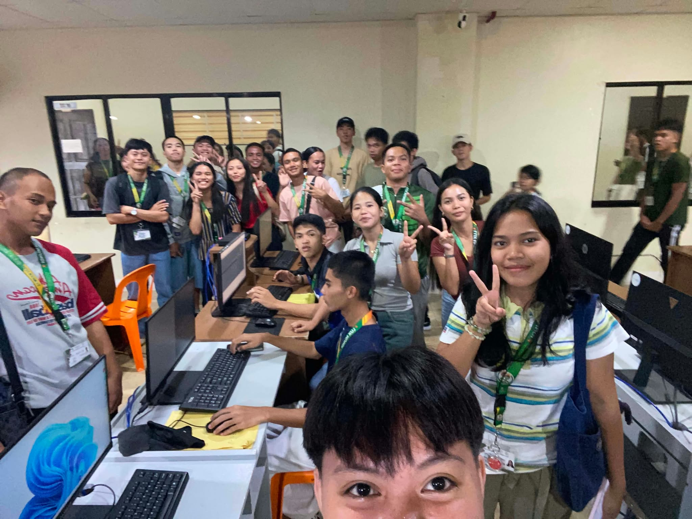
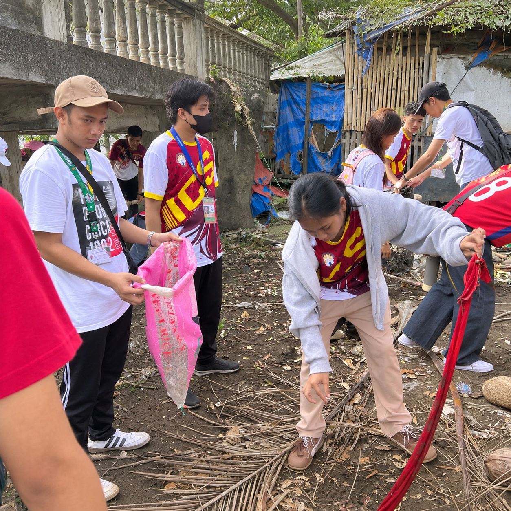
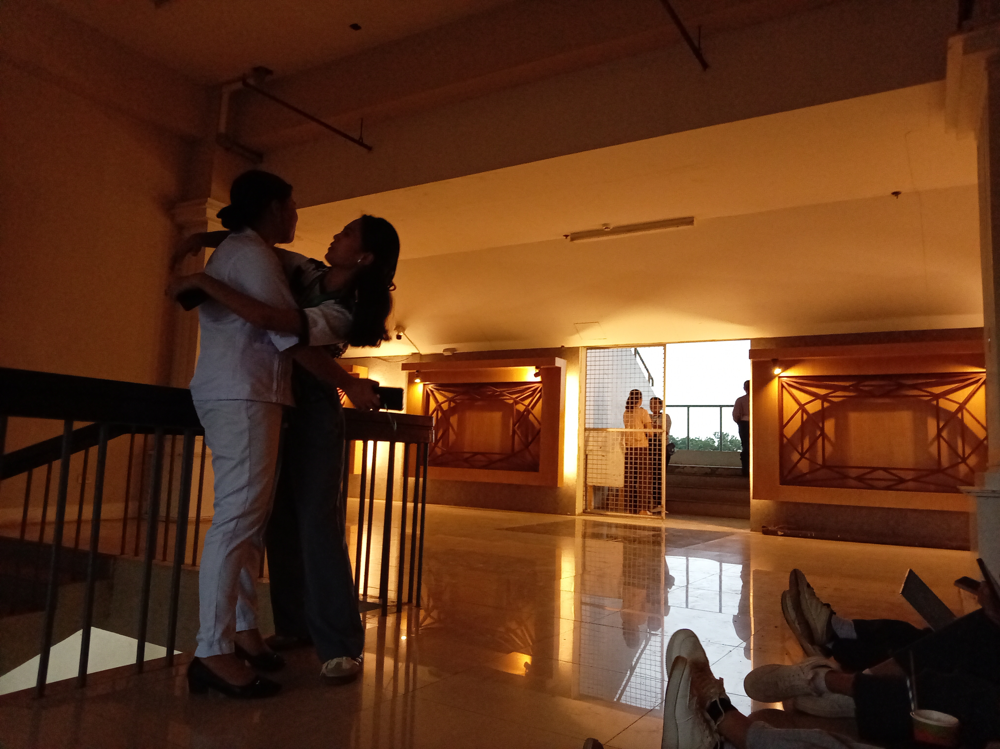

Una ang Ginoo
Serving others is how the light is shared
Serving my community matters because even small acts of kindness can make a big difference. As a student, I can share my time, help others, and show God's love through my actions.

I helped my classmates when they had difficulty understanding their schoolwork. I learned that sharing what I know and being patient with others are simple ways to show kindness.

I did my part in keeping our surroundings clean and organized. This reminded me that taking care of our environment is a shared responsibility, and every small effort counts.

I tried to treat others with respect, offer help when I could, and encourage people who needed support. I realized that we do not need to do something big to make someone feel valued.
Serving others taught me that kindness, patience, and responsibility matter in everyday life. Putting God first means not only praying but also showing love through my actions. I learned that helping others does not require recognition or a reward. Even small acts can bring positive changes, and I want to continue being honest, respectful, and willing to help whenever I can.
A community clean-up and feeding drive by school and church youth, for the neighbors who are usually the last to hear about these things. A lamp is not for admiring. It is for helping people see.
| Item | Goal | Note |
|---|---|---|
| Volunteers | 30 people | Gloves and sacks provided |
| Rice | 50 kg | Packed on the same day |
| Canned goods | 100 cans | Please check expiry dates |
| Drinking water | 5 containers | For volunteers |